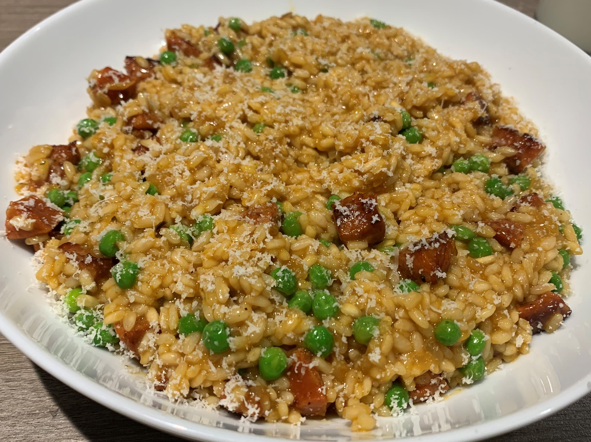

Risotto originated in Northern Italy, and is a rice dish which is cooked using stock until a creamy consistency is reached. This dish uses a specific type of rice which absorbs liquid, allowing it to soak up the all the flavours that have been added. This is a major factor in Risotto's popularity, as it bursts with flavour with every bite. Arborio, Carnaroli, Maratelli, and Vialone Nano are some varieties of rice that are most commonly used in Risotto due to their high starch content.
Below is my finished effort at the chorizo and pea risotto. As you can see, the rice has swollen up as it has absorbed all the flavour in the cooking process. It was definitely worth the effort and should be up there near the top of the list of new dishes to try!
